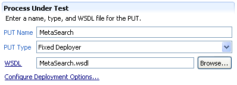
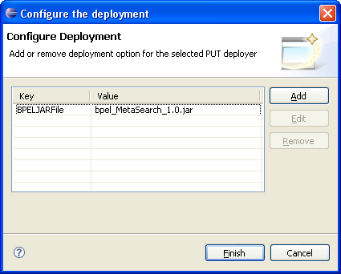

This section covers the basic test suite configuration - creating and changing the options of the test suite itself, the PUT, and the partners of the PUT.
Let's first take a look at the test suite section:
There are two text fields:
Additionally, there is a link to the namespace prefix editor. Namespaces are very important in the test suite document, as the literal data to be sent to the PUT, and the XPath conditions used for verifying incoming transmissions and copying values must be formulated with the right namespace URIs. When adding WSDL files to the test suites, their target namespaces will automatically be added and a prefix will be generated. To change these prefixes or add new namespaces, click on the Configure Namespace Prefixes... hyperlink to open the following editor:

Click Add to add a namespace declaration, Edit to change an existing namespace (either prefix or URL) and Remove to remove a namespace declaration. Note that editing a prefix will change the prefix in the complete document. Removing a namespace, however, may leave unresolvable prefixes in the document.
The Process Under Test (PUT) section allows specification of the BPEL process which will be tested in this test suite:

There are three text fields:
Additionally, there is a link which opens the deployment options wizard. This wizard allows adding deployment options for the selected deployer. The deployment format is different for each BPEL engine and deployer, and so are the options. The following screenshot shows an example configuration for the Oracle deployer:

Click Add to add a deyploment option, Edit to change an existing deployment option, and Remove to remove a deployment option. Depending on the selected deployer, the available keys will be presented to you when adding and editing options.
In the Partners section, you may add, edit, or remove the partners to be simulated in this test suite. A BPEL process can have an arbitrary number of partners, and it is up to you to decide which partners should be simulated.

Click Add, Edit, or Remove to change the simulated partners of the PUT. Each partner has a name which identifies the partner in the test suite document, and also forms the second part of the simulated partner URL (the partner name must be appended to the Base URL when configuring the partner WSDL for the test). Besides the name, the partner WSDL must also be specified. The WSDL service definition will be used by the framework to extract encoding and style options for the SOAP operations.
The following screen shot shows an example of editing a partner:

The given WSDL file will be validated and a prefix for the target namespace will be added when selecting OK.